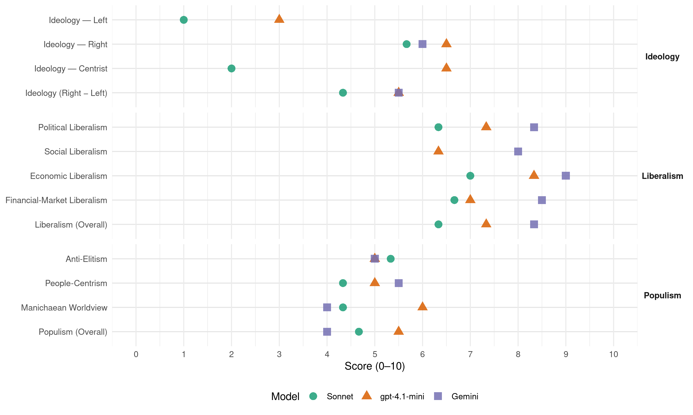

Republicans (United States, 1980)
manifesto_id 61620_198011
Get full text: This site shows derived annotations and short verbatim quotes only. The full manifesto text is © Manifesto Project / WZB — obtain it via manifesto-project.wzb.eu using the manifesto_id above.
Headline scores
| Dimension | Sonnet | gpt-4.1-mini | Gemini |
|---|---|---|---|
| Populism (Overall) | 4.7 | 5.5 | 4.0 |
| Anti-Elitism | 5.3 | 5.0 | 5.0 |
| People-Centrism | 4.3 | 5.0 | 5.5 |
| Manichaean Worldview | 4.3 | 6.0 | 4.0 |
| Ideology (Right − Left) | 4.3 | 5.5 | 5.5 |
| Liberalism (Overall) | 6.3 | 7.3 | 8.3 |
| Political Liberalism | 6.3 | 7.3 | 8.3 |
| Social Liberalism | – | 6.3 | 8.0 |
| Economic Liberalism | 7.0 | 8.3 | 9.0 |
| Financial-Market Liberalism | 6.7 | 7.0 | 8.5 |
Evidence per dimension
Economic Liberalism
Gemini · score 9.0 · verified · chunk 1
“free and unfettered conditions of market entry”
goods and services must take place under free and unfettered conditions of market entry.
Gemini · score 10.0 · verified · chunk 2
“revitalize the free enterprise system”
programs which will revitalize the free enterprise system and reverse the trend toward regulation
Gemini · score 8.0 · verified · chunk 3
“The Republican Party believes in free trade”
jobs of millions of Americans in domestic industries… The Republican Party believes in free trade, and we will insist that our trade policy
gpt-4.1-mini · score 9.0 · verified · chunk 1
“We pledge a system that will: provide adequate living standards for the truly needy”
As a party we commit ourselves to a welfare policy that is truly reflective of our people’s true sense of compassion and charity as well as an appreciation of every individual’s need for dignity and self-respect. We pledge a system that will: provide adequate living standards for the truly needy; end welfare fraud by removing ineligibles from the welfare rolls, tightening food stamp eligibility requirements, and ending aid to illegal aliens and the voluntarily unemployed:
gpt-4.1-mini · score 8.0 · verified · chunk 2
“We will actively pursue new and expanding opportunities for all Americans to become more directly involved in our free enterprise system”
The Republican Party believes that it is important to develop a growing constituency which recognizes its direct relationship to the health and success of free enterprise, and realizes the negative impact of excessive regulation. Education and involvement in the system are the best means to accomplish this. To this end, we will actively pursue new and expanding opportunities for all Americans to become more directly involved in our free enterprise system.
gpt-4.1-mini · score 8.0 · verified · chunk 3
“free trade, and we will insist that our trade policy be based on the principles of reciprocity and equity”
The Republican Party believes in free trade, and we will insist that our trade policy be based on the principles of reciprocity and equity. We oppose subsidies, tariff and non-tariff barriers that unfairly restrict access of American products to foreign markets.
Sonnet · score 8.0 · verified · chunk 1
“bold program of tax rate reductions, spending restraints, and regulatory reforms”
we will stand united as a party behind a bold program of tax rate reductions, spending restraints, and regulatory reforms that will inject new life into the economic bloodstream
Sonnet · score 7.0 · verified · chunk 2
“forces of the free market must be brought to bear”
The forces of the free market must be brought to bear to promote competition, reduce costs, and improve the return on investment to stimulate capital formation in the private sector.
Sonnet · score 6.0 · verified · chunk 3
“Republican Party believes in free trade”
The Republican Party believes in free trade, and we will insist that our trade policy be based on the principles of reciprocity and equity.
Financial-Market Liberalism
Gemini · score 8.0 · verified · chunk 1
“volatility in financial markets”
economic policies of the past year have created extreme volatility in financial markets which have made it impossible
Gemini · score 9.0 · verified · chunk 2
“monetary policy back on track”
as we end inflation by putting our monetary policy back on track. Monetary and fiscal policy
gpt-4.1-mini · score 7.0 · verified · chunk 1
“We will work to change the tax laws to encourage savings”
We will work to change the tax laws to encourage savings so that young families will be able to afford their dreams. Specifically, we will support legislation to lower tax rates on savings in order to increase funds available for housing.
gpt-4.1-mini · score 7.0 · verified · chunk 2
“We support use of the Congressional veto, sunset laws, and strict budgetary control of the bureaucracies as a means of eliminating unnecessary spending and regulations”
The unremitting delegation of authority to the rule-makers by successive Democratic Congresses and the abuse of that authority has led to our current crisis of overregulation. For that reason, we support use of the Congressional veto, sunset laws, and strict budgetary control of the bureaucracies as a means of eliminating unnecessary spending and regulations.
Sonnet · score 7.0 · verified · chunk 1
“lower tax rates on savings and investment income”
provide special incentives for savings by lowering the tax rates on savings and investment income; revitalize our productive capacities by simplifying and accelerating tax depreciation schedules
Sonnet · score 7.0 · verified · chunk 2
“decontrol of the price at the well head”
In order to increase domestic production of energy, Republicans advocate the decontrol of the price at the well head of oil and gas.
Sonnet · score 6.0 · verified · chunk 3
“stabilize the value of the dollar”
Republicans will conduct international economic policy in a manner that will stabilize the value of the dollar at home and abroad.
Political Liberalism
Gemini · score 8.0 · verified · chunk 1
“genius of representative democracy”
by the central government into the decisionmaking process This tenet is the genius of representative democracy. Republicans also
Gemini · score 9.0 · verified · chunk 2
“consent of the governed”
As government’s power continues to grow, the “consent of the governed will diminish. Republicans support
Gemini · score 8.0 · verified · chunk 3
“their commitment to democracy and in trade”
exist between the two countries in their commitment to democracy and in trade, defense, and cultural matters.
gpt-4.1-mini · score 8.0 · verified · chunk 1
“We reaffirm our belief in the traditional role and values of the family in our society”
We reaffirm our belief in the traditional role and values of the family in our society. The damage being done today to the family takes its greatest toll on the woman.
gpt-4.1-mini · score 7.0 · verified · chunk 2
“We support the repeal of those restrictive campaign spending limitations that tend to create obstacles to local grassroots participation in federal elections”
Election Reform The Republican Party has consistently encouraged full participation in our electoral process and is disturbed by the steady decline in voter participation in the United States in recent years. We believe that the increased voter turnout during the past year in Republican campaigns is due to dissatisfaction with Democratic officials and their failure to heed popular demands to cut taxes, restrain spending, curb inflation, and drastically reduce regulation. Republicans support public policies that will promote electoral participation without compromising ballot-box security. We strongly oppose national postcard voter registration schemes because they are an open invitation to fraud. Republicans support public policies that encourage political activity by individual citizens. We support the repeal of those restrictive campaign spending limitations that tend to create obstacles to local grassroots participation in federal elections.
gpt-4.1-mini · score 7.0 · verified · chunk 3
“democracy and trade, defense, and cultural matters”
Japan will continue to be a pillar of American policy in Asia. Republicans recognize the mutual interests and special relationships that exist between the two countries in their commitment to democracy and trade, defense, and cultural matters. A new Republican Administration will work closely with the Japanese government to resolve outstanding trade and energy problems on an equitable basis.
Sonnet · score 7.0 · verified · chunk 1
“fundamental conviction of the Republican Party that government”
It has long been a fundamental conviction of the Republican Party that government should foster in our society a climate of maximum individual liberty and freedom of choice.
Sonnet · score 6.0 · verified · chunk 2
“independence of the Federal Reserve System must be preserved”
the same people who have so massively expanded government spending should not be allowed politically to dominate our monetary policy. The independence of the Federal Reserve System must be preserved.
Sonnet · score 6.0 · verified · chunk 3
“expand political participation and individual liberties”
We will encourage continued efforts to expand political participation and individual liberties within the country, but will recognize the special problems
Liberalism (Overall)
Gemini · score 8.0 · verified · chunk 1
“free and unfettered conditions of market entry”
goods and services must take place under free and unfettered conditions of market entry.
Gemini · score 9.0 · verified · chunk 2
“revitalize the free enterprise system”
programs which will revitalize the free enterprise system and reverse the trend toward regulation
Gemini · score 8.0 · verified · chunk 3
“The Republican Party believes in free trade”
jobs of millions of Americans in domestic industries… The Republican Party believes in free trade, and we will insist that our trade policy
gpt-4.1-mini · score 8.0 · verified · chunk 1
“We support equal rights and equal opportunities for women”
We support equal rights and equal opportunities for women, without taking away traditional rights of women such as exemption from the military draft.
gpt-4.1-mini · score 7.0 · verified · chunk 2
“We will actively pursue new and expanding opportunities for all Americans to become more directly involved in our free enterprise system”
The Republican Party believes that it is important to develop a growing constituency which recognizes its direct relationship to the health and success of free enterprise, and realizes the negative impact of excessive regulation. Education and involvement in the system are the best means to accomplish this. To this end, we will actively pursue new and expanding opportunities for all Americans to become more directly involved in our free enterprise system.
gpt-4.1-mini · score 7.0 · verified · chunk 3
“free trade, and we will insist that our trade policy be based on the principles of reciprocity and equity”
The Republican Party believes in free trade, and we will insist that our trade policy be based on the principles of reciprocity and equity. We oppose subsidies, tariff and non-tariff barriers that unfairly restrict access of American products to foreign markets.
Sonnet · score 7.0 · verified · chunk 1
“rebirth of liberty and resurgence of private initiatives”
All of these goals - and many others - we confidently expect to achieve through a rebirth of liberty and resurgence of private initiatives
Sonnet · score 6.0 · verified · chunk 2
“marketplace, rather than the bureaucrats, should regulate”
We believe that the marketplace, rather than the bureaucrats, should regulate management decisions.
Sonnet · score 6.0 · verified · chunk 3
“free trade, and we will insist”
The Republican Party believes in free trade, and we will insist that our trade policy be based on the principles of reciprocity and equity.
Anti-Elitism
Gemini · score 7.0 · verified · chunk 1
“chief architects of our decline - Democratic politicians”
is that the chief architects of our decline - Democratic politicians - are without program
Gemini · score 4.0 · verified · chunk 2
“obstructive policies of the Democratic Administration”
bitter confrontation between the states and the obstructive policies of the Democratic Administration. The Congress has been frustrated
Gemini · score 4.0 · verified · chunk 3
“diplomatic damage done by the Carter Administration”
Central and South America and repair the diplomatic damage done by the Carter Administration. We pledge understanding and assistance
gpt-4.1-mini · score 7.0 · verified · chunk 1
“chief architects of our decline - Democratic politicians”
By far the most galling aspect of it all is that the chief architects of our decline - Democratic politicians - are without program or ideas to reverse it.
gpt-4.1-mini · score 3.0 · verified · chunk 2
“Democratic Party domination of the body politic over the last 47 years has produced a central government of vastly expanded size, scope, and rigidity”
Big Government Under the guise of providing for the common good, Democratic Party domination of the body politic over the last 47 years has produced a central government of vastly expanded size, scope, and rigidity. Confidence in government, especially big government, has been the chief casualty of too many promises made and broken, too many commitments unkept.
Sonnet · score 7.0 · verified · chunk 1
“chief architects of our decline - Democratic politicians”
By far the most galling aspect of it all is that the chief architects of our decline - Democratic politicians - are without program or ideas to reverse it.
Sonnet · score 5.0 · verified · chunk 2
“Democratic Party domination of the body politic”
Under the guise of providing for the common good, Democratic Party domination of the body politic over the last 47 years has produced a central government of vastly expanded size
Sonnet · score 4.0 · verified · chunk 3
“Carter Administration has largely ignored”
Yet the Carter Administration has largely ignored the role of international economics in relations between the United States and friendly nations
Ideology — Centrist
gpt-4.1-mini · score 7.0 · verified · chunk 1
“We, the Republican Party, hold ourselves forth as the Party best able to arrest and reverse the decline”
We, the Republican Party, hold ourselves forth as the Party best able to arrest and reverse the decline. We offer new ideas and candidates, from the top of our ticket to the bottom, who can bring to local and national leadership firm, steady hands and confidence and eagerness.
gpt-4.1-mini · score 6.0 · verified · chunk 2
“Government must ever be the servant of the nation, not its master”
The durability of our system lies in its flexibility and its accommodation to diversity and changing circumstance. It is notable as much for what it permits as for what it proscribes. Government must ever be the servant of the nation, not its master.
Sonnet · score 2.0 · verified · chunk 1
“Republicans, Democrats, and Independents have been watching”
Republicans, Democrats, and Independents have been watching and reading these signs. They have been watching incredulously as disaster after disaster unfolds.
Sonnet · score 2.0 · verified · chunk 2
“government must ever be the servant of the nation”
It is notable as much for what it permits as for what it proscribes. Government must ever be the servant of the nation, not its master.
Sonnet · score 2.0 · verified · chunk 3
“mutual interest and recognizing that each country”
seeking solutions to common problems on the basis of mutual interest and recognizing that each country has unique contributions to make
Ideology — Left
gpt-4.1-mini · score 3.0 · verified · chunk 1
“We categorically reject the notion of a guaranteed annual income”
We categorically reject the notion of a guaranteed annual income, no matter how it may be disguised, which would destroy the fiber of our economy and doom the poor to perpetual dependence.
gpt-4.1-mini · score 3.0 · verified · chunk 2
“We deplore disruptive work stoppages which interrupt the supply of food to consumers”
Agricultural Labor Comprehensive labor legislation, which will be fair to American workers and encourage better relations with our neighbors in Mexico and Canada with whom we wish to establish a working North American Accord, is an essential endeavor. We deplore disruptive work stoppages which interrupt the supply of food to consumers.
Sonnet · score 1.0 · verified · chunk 1
“reduce tax rates on individuals and businesses”
the Republican Party pledges to: reduce tax rates on individuals and businesses to increase incentives for all Americans and to encourage more savings, investment
Sonnet · score 1.0 · verified · chunk 2
“free enterprise system is the source of all income”
raise the public awareness and understanding that our free enterprise system is the source of all income, government and private
Sonnet · score 1.0 · verified · chunk 3
“oppose subsidies, tariff and non-tariff barriers”
We oppose subsidies, tariff and non-tariff barriers that unfairly restrict access of American products to foreign markets.
Ideology (Right − Left)
Gemini · score 7.0 · verified · chunk 1
“Marxist tyrannies spread more rapidly”
blackmail us into submission. Marxist tyrannies spread more rapidly through the Third World
Gemini · score 4.0 · verified · chunk 2
“national pride”
its self-respect, its self-confidence, and its national pride. National Security Defense Budget Trends
gpt-4.1-mini · score 6.0 · verified · chunk 1
“We, the Republican Party, hold ourselves forth as the Party best able to arrest and reverse the decline”
We, the Republican Party, hold ourselves forth as the Party best able to arrest and reverse the decline. We offer new ideas and candidates, from the top of our ticket to the bottom, who can bring to local and national leadership firm, steady hands and confidence and eagerness.
gpt-4.1-mini · score 5.0 · verified · chunk 2
“Democratic Party domination of the body politic over the last 47 years has produced a central government of vastly expanded size, scope, and rigidity”
Big Government Under the guise of providing for the common good, Democratic Party domination of the body politic over the last 47 years has produced a central government of vastly expanded size, scope, and rigidity. Confidence in government, especially big government, has been the chief casualty of too many promises made and broken, too many commitments unkept.
Sonnet · score 5.0 · verified · chunk 1
“Marxist tyrannies spread more rapidly through the Third World”
Marxist tyrannies spread more rapidly through the Third World and Latin America. Our alliances are frayed in Europe and elsewhere.
Sonnet · score 4.0 · verified · chunk 2
“deplore the Marxist Sandinista takeover of Nicaragua”
We deplore the Marxist Sandinista takeover of Nicaragua and the Marxist attempts to destabilize El Salvador, Guatemala, and Honduras.
Sonnet · score 4.0 · verified · chunk 3
“Marxist, totalitarian model being forcibly imposed”
African nations, if given a choice, will reject the Marxist, totalitarian model being forcibly imposed by the Soviet Union and its surrogates
Ideology — Right
Gemini · score 7.0 · verified · chunk 1
“Marxist tyrannies spread more rapidly”
blackmail us into submission. Marxist tyrannies spread more rapidly through the Third World
Gemini · score 5.0 · verified · chunk 2
“national pride”
its self-respect, its self-confidence, and its national pride. National Security Defense Budget Trends
gpt-4.1-mini · score 6.0 · verified · chunk 1
“We reaffirm our belief in the traditional role and values of the family”
We reaffirm our belief in the traditional role and values of the family in our society. The damage being done today to the family takes its greatest toll on the woman.
gpt-4.1-mini · score 7.0 · verified · chunk 2
“We believe that the federal government has a duty to adopt immigration laws and follow enforcement procedures which will fairly and effectively implement the immigration policy desired by American people”
Immigration and Refugee Policy Residency in the United States is one of the most precious and valued of conditions. The traditional hospitality of the American people has been severely tested by recent events, but it remains the strongest in the world. Republicans are proud that our people have opened their arms and hearts to strangers from abroad and we favor an immigration and refugee policy which is consistent with this tradition. We believe that to the fullest extent possible those immigrants should be admitted who will make a positive contribution to America and who are willing to accept the fundamental American values and way of life. At the same time, United States immigration and refugee policy must reflect the interests of the nation’s political and economic well-being. Immigration into this country must not be determined solely by foreign governments or even by the millions of people around the world who wish to come to America. The federal government has a duty to adopt immigration laws and follow enforcement procedures which will fairly and effectively implement the immigration policy desired by American people.
Sonnet · score 6.0 · verified · chunk 1
“preserve a world at peace by keeping America strong”
Overseas, our goal is equally simple and direct: to preserve a world at peace by keeping America strong.
Sonnet · score 5.0 · verified · chunk 2
“immigration and refugee policy which is consistent”
we favor an immigration and refugee policy which is consistent with this tradition. We believe that to the fullest extent possible those immigrants should be admitted who will make a positive contribution
Sonnet · score 6.0 · verified · chunk 3
“Soviet Union and Cuba that their subversion”
We will make it clear to the Soviet Union and Cuba that their subversion and their build-up of offensive military forces is unacceptable.
Manichaean Worldview
Gemini · score 5.0 · verified · chunk 1
“sacrificed the needy to the greedy”
welfare fraud that diverts resources away from the truly poor. They have sacrificed the needy to the greedy, and sent the welfare bills
Gemini · score 3.0 · verified · chunk 2
“eternal vigilance against tyranny”
that the price of peace is eternal vigilance against tyranny. Therefore we commend to all
gpt-4.1-mini · score 7.0 · verified · chunk 1
“The only malaise in this country is found in the leadership of the Democratic Party”
To those who, with Mr. Carter, say the American people suffer from a national “malaise,” we respond: The only malaise in this country is found in the leadership of the Democratic Party, in the White House and in Congress.
gpt-4.1-mini · score 5.0 · verified · chunk 2
“Mr. Carter must go! For what he has done to the dollar; for what he has done to the life savings of millions of Americans”
Inflation We consider inflation and its impact on jobs to he the greatest domestic threat facing our nation today. Mr. Carter must go! For what he has done to the dollar; for what he has done to the life savings of millions of Americans; for what he has done to retirees seeking a secure old age; for what he has done to young families aspiring to a home, an education for their children, and a rising living standard, Mr. Carter must not have another four years in office.
Sonnet · score 5.0 · verified · chunk 1
“Divided, leaderless, unseeing, uncomprehending, they plod on”
Divided, leaderless, unseeing, uncomprehending, they plod on with listless offerings of pale imitations of the same policies they have pursued so long
Sonnet · score 4.0 · verified · chunk 2
“bitter confrontation between the states”
Lack of such partnership has resulted in four years of bitter confrontation between the states and the obstructive policies of the Democratic Administration
Sonnet · score 4.0 · verified · chunk 3
“treating a friend as a friend and self-proclaimed enemies as enemies”
We will return to the fundamental principle of treating a friend as a friend and self-proclaimed enemies as enemies, without apology.
People-Centrism
Gemini · score 6.0 · verified · chunk 1
“ingenuity and creative powers of our people”
bottled up the enormous ingenuity and creative powers of our people. Those energies
Gemini · score 5.0 · verified · chunk 2
“the wisdom and confidence of the people”
reinforced by the faith and good will, the wisdom and confidence of the people from whom it derives its powers
gpt-4.1-mini · score 6.0 · verified · chunk 1
“The American people have hardly begun to marshal their talents”
To those Democrats who say Americans must be content to passively accept the gradual but inexorable decline of America, we answer: The American people have hardly begun to marshal their talents and resources or realize the accomplishments and dreams that only freedom can inspire.
gpt-4.1-mini · score 4.0 · verified · chunk 2
“the consent of the governed will diminish”
As government’s power continues to grow, the “consent of the governed will diminish. Republicans support an end to the growth of the federal government and pledge to return the decisionmaking process to the smaller communities of society.
Sonnet · score 6.0 · verified · chunk 1
“rising up in 1980 to say that this confusion must end”
They now have had enough. They are rising up in 1980 to say that this confusion must end; this drift must end; we must pull ourselves together as a people
Sonnet · score 4.0 · verified · chunk 2
“faith and good will, the wisdom and confidence of the people”
Its timeless strength, coupled with and reinforced by the faith and good will, the wisdom and confidence of the people from whom it derives its powers, has preserved us
Sonnet · score 3.0 · verified · chunk 3
“protect American jobs and American workers”
Republicans are committed to protect American jobs and American workers first and foremost.
Populism (Overall)
Gemini · score 6.0 · verified · chunk 1
“chief architects of our decline - Democratic politicians”
is that the chief architects of our decline - Democratic politicians - are without program
Gemini · score 4.0 · verified · chunk 2
“obstructive policies of the Democratic Administration”
bitter confrontation between the states and the obstructive policies of the Democratic Administration. The Congress has been frustrated
Gemini · score 2.0 · verified · chunk 3
“diplomatic damage done by the Carter Administration”
Central and South America and repair the diplomatic damage done by the Carter Administration. We pledge understanding and assistance
gpt-4.1-mini · score 7.0 · verified · chunk 1
“chief architects of our decline - Democratic politicians”
By far the most galling aspect of it all is that the chief architects of our decline - Democratic politicians - are without program or ideas to reverse it.
gpt-4.1-mini · score 4.0 · verified · chunk 2
“Democratic Party domination of the body politic over the last 47 years has produced a central government of vastly expanded size, scope, and rigidity”
Big Government Under the guise of providing for the common good, Democratic Party domination of the body politic over the last 47 years has produced a central government of vastly expanded size, scope, and rigidity. Confidence in government, especially big government, has been the chief casualty of too many promises made and broken, too many commitments unkept.
Sonnet · score 6.0 · verified · chunk 1
“chief architects of our decline - Democratic politicians”
By far the most galling aspect of it all is that the chief architects of our decline - Democratic politicians - are without program or ideas to reverse it.
Sonnet · score 4.0 · verified · chunk 2
“time to de-emphasize big bureaucracies”
It is time for change - time to de-emphasize big bureaucracies - time to shift the focus of national politics from expanding government’s power
Sonnet · score 4.0 · verified · chunk 3
“Carter Administration has led to the most serious decline”
The economic policy of the Carter Administration has led to the most serious decline in the value of the dollar in history.
Social Liberalism